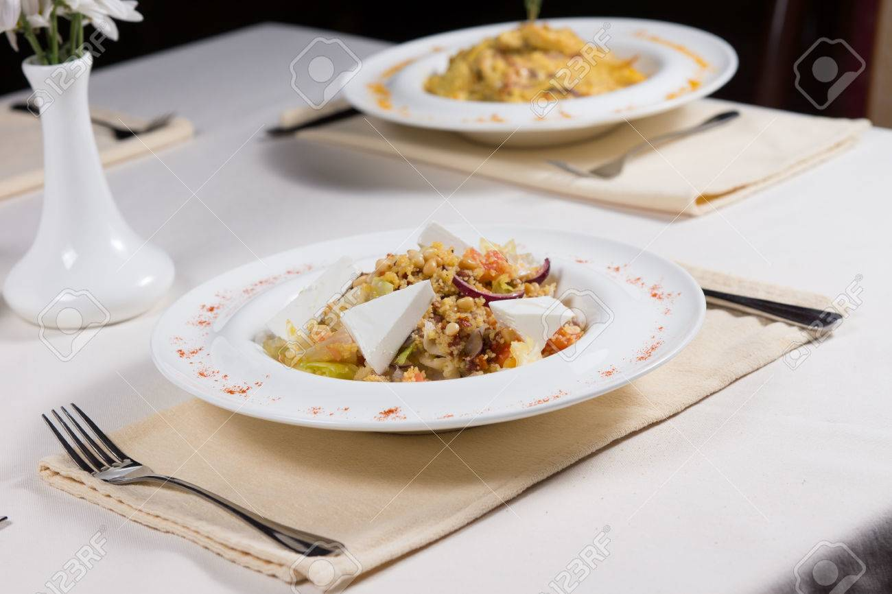
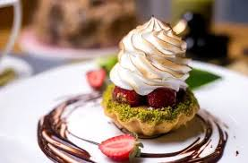
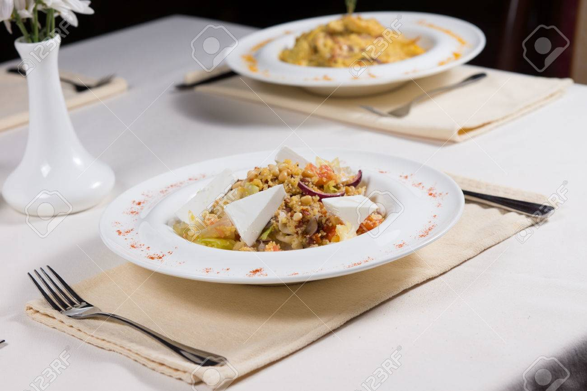
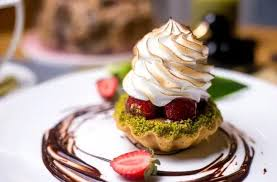

Misión: Ofrecer una experiencia culinaria única con ingredientes frescos y de alta calidad.
Visión: Ser el restaurante más reconocido por su excelencia gastronómica y servicio excepcional.
 



"Nuestra pasión por la comida es el ingrediente secreto de cada plato que servimos."
Nuestro chef principal tiene más de 20 años de experiencia en gastronomía internacional.